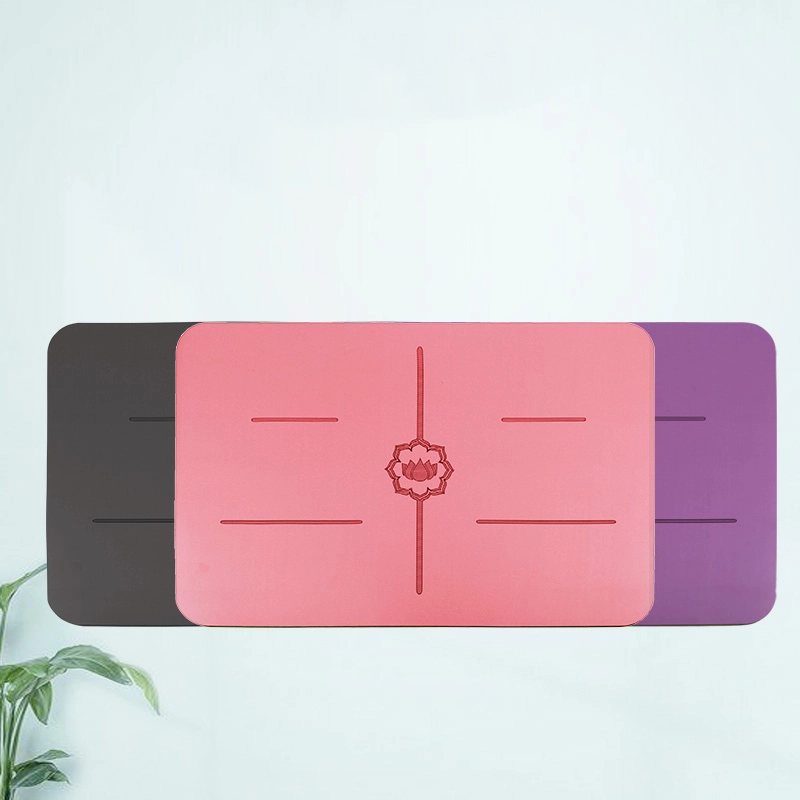
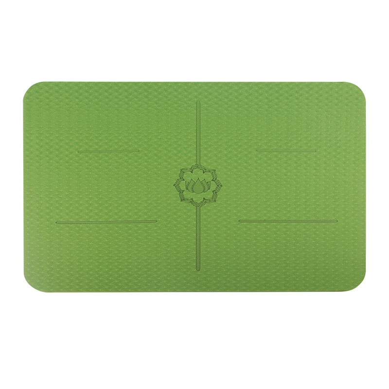

Esterillas redondas de meditación, estampados de mandalas, cojines cilíndricos y esterillas para reformer de Pilates hechas a medida según las dimensiones de tu máquina y con tu propio logotipo.
Esta familia cubre tres usos que una esterilla de yoga estándar no cubre. Las esterillas redondas de meditación dan a la práctica sentada un asiento definido, en 68 cm redondos o 40 × 60 cm rectangulares en lugar de un rollo de 183 cm. Los cojines cilíndricos sostienen rodillas y columna en el trabajo restaurativo, y los que fabricamos miden 64 × 24 × 13 cm y 550 g, así que viajan en un paquete normal. Los estampados mandala y en degradado convierten un cojín funcional en un regalo de venta.
Las esterillas para Reformer de pilates son la parte técnica y se fabrican por encargo. Cada máquina tiene una disposición distinta de carro, hombreras y barra de pies, así que cortamos según tu plano y añadimos tu logotipo en lugar de imponerte una forma de catálogo. Envíanos el modelo de máquina, o las medidas y la posición del logotipo: la primera muestra es el paso de confirmación.
Frente a una esterilla de yoga, estas son más cortas y más densas, y el material sigue al uso. Una superficie de PU firme sobre caucho encaja con la práctica sentada. Donde importa más el coste final, el TPE baja el peso. El ante entra cuando el arte es lo que vende el diseño. Color y motivo se definen por pedido en todo el set, así que un programa viaja como un kit a juego. El pedido mínimo es de 100 unidades, muestras en unos 7 días.

PU + Esterilla de meditación de caucho natural (40×60 / 60×60 cm, 4.5 mm) con un cojín cilíndrico 100 % poliéster (64×24×13 cm, 550 g); colores a medida.

PU+Caucho · 40x60cm
Hecho por encargo

Hecho por encargo

Hecho por encargo

PU+Caucho · 40x60cm

Ante + Goma · 68cm

Suede+TPE · 185x68cm

TPE · 40x60cm
Las preguntas que más nos hacen los compradores, desde nuestras propias líneas:
Envíanos tu plano, el precio que deseas o una foto: te responderemos con un presupuesto y un plan de muestras en un plazo de 24 horas. Cantidad mínima de pedido: 100 unidades.
Solicita un presupuesto